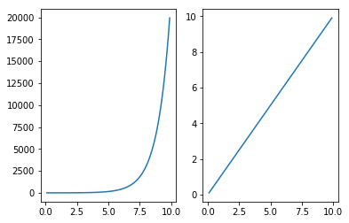
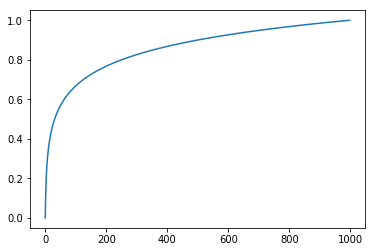
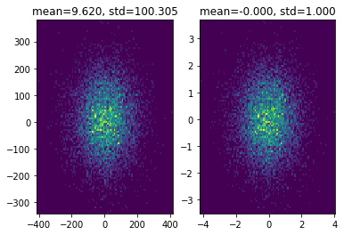
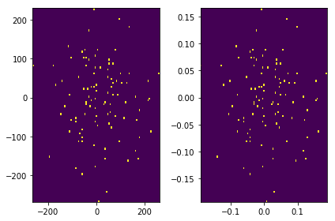

Table of Contents
1 DONE Feature Engineering
- State "DONE" from "TODO"
1.1 Numeric Features
1.1.1 Binarization
1.1.2 Numeric Transforms
Problem:
Raw counts that span several orders of magnitude are problematic for many models.
- In a linear model, the same linear coefficient would have to work for all possible values of the counts.
- Large counts could also wreak havoc in unsupervised learning methods such as k-means clustering, which uses Euclidean distance as a similarity function to measure the similarity between data points.
- A large count in one element of the data vector would outweight the similarity in all other elements, which could throw off the entire similarity measurement.
Solution:
Transform numeric into similar orders of magnitude, It group the counts into bins, and get rid of the actual count values. Quantization maps a continuous number to a discrete one. We can think of the discretized numbers as an ordered sequence of bins that represent measure of intensity.
- Quantization or Binning
- fixed-width binning(fixed-width) Note: If there are large gaps in the counts, then there will be many empty bins with no data.
- quantile binning(adaptive)
-
\begin{equation}
y=\log_{a}(x)
\end{equation}
x = np.arange(0.1, 10, 0.1) y = np.exp(x) plt.subplot(1, 2, 1) plt.plot(x, y) y = np.log(y) plt.subplot(1, 2, 2) plt.plot(x, y) pass

1.1.3 Feature Scaling or Normalization
Feature scaling changes the scale of the feature.
- Min-Max scaling
squeezes all feature values to be within the range of \([0,1]\)
\begin{equation} \tilde{x}=\frac{x-\min(x)}{\max(x)-\min(x)} \end{equation}def min_max_scaling(x): return (x - np.min(x)) / np.max(x) - np.min(x) x = np.log10(np.arange(1, 1000)) y = min_max_scaling(x) plt.plot(y) pass

- Standardization(Variance Scaling)
scale feature to that has a mean of 0 and a variance of 1
\begin{equation} \tilde{x}=\frac{x-mean(x)}{\sqrt{var(x)}} \end{equation}def standardization(x): return (x - np.mean(x)) / np.std(x) x = np.random.normal(loc=10.0, scale=100.0, size=(10000, 2)) y = standardization(x) plt.subplot(1, 2, 1) plt.title('mean=%.3f, std=%.3f' % (np.mean(x), np.std(x))) plt.hist2d(x[:, 0], x[:, 1], bins=100) plt.subplot(1, 2, 2) plt.title('mean=%.3f, std=%.3f' % (np.mean(y), np.std(y))) plt.hist2d(y[:, 0], y[:, 1], bins=100) pass

Don't "center" sparse data!
- \(l^{2}\) Normalization
normalize(divides) the original feature value by what's known as the \(l^{2}\) norm(Euclidean norm).
\begin{align} &\tilde{x}=\frac{x}{ \left\Vert x \right\Vert _{2} }\\ &\left\Vert x \right\Vert _{2}=\sqrt{x_{1}^{2}+x_{2}^{2}+\cdots+x_{m}^{2}} \end{align}
def l2_normalization(x): return x / np.sqrt(np.sum(pow(x, 2))) x = np.random.normal(loc=10.0, scale=100.0, size=(100, 2)) y = l2_normalization(x) plt.subplot(1, 2, 1) plt.hist2d(x[:, 0], x[:, 1], bins=100) plt.subplot(1, 2, 2) plt.hist2d(y[:, 0], y[:, 1], bins=100) plt.tight_layout() pass

1.2 Text Data
Bag-of-Words Bag-of-n-Grams Tf-Idf
1.3 Categorical Variables
1.3.1 Encoding
Approach
One-Hot Encoding
from sklearn.preprocessing import OneHotEncoder import pandas as pd df = pd.DataFrame([['a'], ['b'], ['c']]) one_hot = pd.get_dummies(df) one_hot
0_a 0_b 0_c 0 1 0 0 1 0 1 0 2 0 0 1
Dummy Coding
dummy_df = pd.get_dummies(df, drop_first=True) dummy_df
0_b 0_c 0 0 0 1 1 0 2 0 1
- Effect Coding
Space requirement: \(O(n)\) using the sparse vector format, where \(n\) is the number of data points.
Computation requirement: \(O(nk)\) under a linear model, where \(k\) is the number of categories.
Pros
- Easiest to implement
- Potentially most accurate
- Feasible for online learning
Cons
- Computationally inefficient
- Does not adapt to growing categories
- Not feasible for anything other than linear models
- Requires large-scale distributed optimization with truly large datasets
1.3.2 Feature hashing
# m represent fixed word size def hash_features(word_list, m): output = [0] * m for word in word_list: index = hash(word) % m output[index] += 1 return output word_list = ['a', 'b', 'c', 'd', 'e', 'a', 'b'] hash_features(word_list, 5)
[2, 2, 2, 1, 0]
Space requirement: \(O(n)\) using the sparse matrix format, where \(n\) is the number of data points.
Computation requirement: \(O(nm)\) under a linear or kernel model, where \(m\) is the number of hash bins.
Pros
- Easy to implement
- Makes model training cheaper
- Easily adaptable to new categories
- Easily handles rare categories
- Feasible for online learing
Cons
- Only suitable for linear or kernelized models
- Hashed features not interpretable
- Mixed reports of accuracy
1.3.3 Bin-counting
Space requirement: \(O(n+k)\) for small, dense representation of each data point, plus the count statistics that must be kept for each category.
Computation requirement: \(O(n)\) for linear models; also usable for nonlinear models such as trees
Pros
- Smallest computational burden at training time
- Enables tree-based models
- Relatively easy to adapt to new categories
- Handles rare categories with back-off or count-min sketch
- Interpretable
Cons
- Requires historical data
- Delayed updates required, not completely suitable for online learning
- Higher potential for leakage
1.4 Feature Selection
Feature selection techniques prune away nonuseful features in order to reduce the complexity of the resulting model.
Feature selection techniques fail into three classes:
- Filtering
- prepossess features to remove ones that are unlikely to be useful for the model
- Wrapper methods
- These techniques are expensive, but they allow you to try out subsets of features, which means you won't accidentally prune away features that are uninformative by themselves but useful when taken in combination.
- Embedded methods
- These methods perform feature selection as part of the model training process.
1.5 Feature Crosses
2 Model Evaluation
2.1 Evaluation Function
2.1.1 Hold-out
2.1.2 k
2.1.3 bootstrapping
3 Code
%matplotlib inline import numpy as np import matplotlib.pyplot as plt
plt.rcParams['figure.facecolor'] = 'white'
(venv-workon "python3") (setq-local my/org-babel-src-list '("import_package" "matplotlib_configure" "tool_function")) (dolist (list my/org-babel-src-list) (org-babel-goto-named-src-block list) (org-babel-execute-src-block)) (outline-hide-sublevels 1)